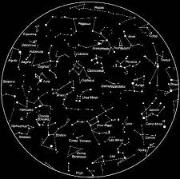

|

Yıldızlar Nedir?
Yıldızlar, uzayda kendi ışığını ve ısısını üretebilen dev gaz kütleleridir. Temel olarak hidrojen ve helyum gazlarından oluşurlar.
Çekirdeklerinde gerçekleşen nükleer füzyon tepkimeleri sayesinde enerji açığa çıkar; bu enerji hem yıldızın parlamasını sağlar hem de çevresine
ısı ve ışık yayar.
En basit tanımıyla, bir yıldız devasa bir enerji kaynağıdır. Güneş de aslında bir yıldızdır ve Dünya’ya en yakın olanıdır. Yıldızlar gece gökyüzünde küçük,
titrek noktalar gibi görünürler, ancak gerçekte her biri muazzam büyüklükte, milyonlarca kilometre çapında ateş toplarıdır.
Yıldızların rengi, sıcaklıklarına bağlı olarak değişir. En sıcak yıldızlar mavi, orta sıcaklıktakiler sarı (Güneş gibi) ve en soğuk olanlar kırmızı renkte
parlar. Ayrıca yıldızlar kütlelerine ve yaşam evrelerine göre farklı türlere ayrılır: kırmızı cüceler, beyaz cüceler, dev yıldızlar, süperdevler ve nötron
yıldızları gibi.
Yıldızlar, evrenin temel yapı taşlarıdır. Onlar olmasaydı gezegenler, uydular veya yaşam mümkün olmazdı. Çünkü yıldızlar, hem gezegenleri doğuran maddeyi
hem de yaşam için gerekli enerjiyi sağlar. Yani yıldızlar, evrenin kalbidir.
|